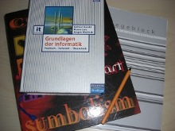

Ausarbeitungen
- Analysis
Boolsche Algebra (en)
[TeX]
[PDF]
Paritäten Cheatsheet (en)
[TeX]
[PDF]
Konvergenzkriterien (de)
[TeX]
[PDF]
Definitionen aus der Lehrveranstaltung Kapitel 1 & 2
[TeX]
[PDF]
Pascalsches Dreieck
[TeX]
[PDF]
Übungsbeispiele für mathem. Beweise (en)
[TeX]
[PDF]
- EiSEW
Prüfungsfragenausarbeitung
[TeX]
[PDF]
- EiInfo
Prüfungsfragenausarbeitung
[TeX]
[PDF]
- GDI
Textbackup der AngabeDrei
[TXT]
Testsuite für T2 der AngabeVier
[pl]
Testsuite für T3 der AngabeVier
[pl]
Sammlung der in der VO vorkommenden Probleme
[TeX]
[PDF]
Prüfungsstoff
[TXT]
- GET
Einheiten der Elektrodynamik
[TeX]
[PDF]
Links
Homeworks
-
Analysis:
Blatt #1 8. Okt
Blatt #2 15. Okt
Blatt #3 22. Okt
Blatt #4 29. Okt
Blatt #5 5. Nov
Blatt #6 12. Nov
Blatt #7 19. Nov
Blatt #8 26. Nov
Blatt #9 3. Dez
Blatt #10 10. Dez
Blatt #11 17. Dez
Blatt #12 14. Jan
Blatt #13 21. Jan
Blatt #14 28. Jan
-
EiSEW:
-
EiInfo:
Motivationsstatement 9. Nov
-
INM:
Exercise 1
Exercise 2
Exercise 3
Exercise 4
Exercise 5
-
EWA:
Kurzbericht 14. Nov
Kurz-Präsentation 14. Nov
Bericht 12.12
Präsentation 17.12
-
GDI:
AbgabeEins
Abgabe Zwei
Abgabe Drei
Abgabe Vier
-
CM:
Exercise 1-3
Exercise 4-5
Exercise 6-9
Exercise 10-13
Exercise 14-19
Exercise 20-22
Exercise 22-24
Exercise 25-30
Aufgabe Gruppe 27
-
BuBi:
-
GET:
-
ESP:
Hello World
Kalenderausgabe
Übung 1
Übung 2
Übung 3
-
StR:
Stand: 10.12.27
See also: http//lukas-prokop.at/proj.php
Lukas Prokop
student of Computer Science and Software Development and Business Management
admin@lukas-prokop.at
License: Emailware